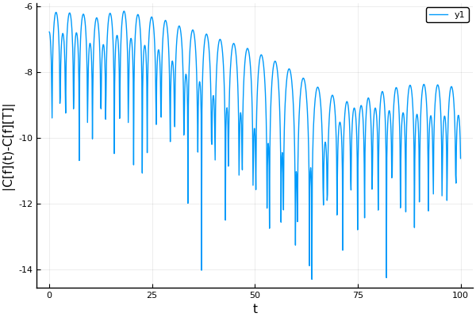

Vlasov-HMF
using LinearAlgebra, QuadGK, Roots, FFTW
using Splittings
using Plots
pyplot()Plots.PyPlotBackend()" Compute M₀ by solving F(m) = 0 "
function mag(β, mass)
F(m) = begin
g(x, n, m) = (1 / π) * (exp(β * m * cos(x)) * cos(n * x))
bessel0(x) = g(x, 0, m)
bessel1(x) = g(x, 1, m)
mass * quadgk(bessel1, 0, π)[1] / quadgk(bessel0, 0, π)[1] - m
end
find_zero(F, (0, mass))
endMain.ex-vlasov-hmf.magfunction Norm(f::Array{Float64,2}, delta1, delta2)
return delta1 * sum(delta2 * sum(real(f), dims=1))
endNorm (generic function with 1 method)"""
Compute the electric hamiltonian mean field from a
2D distribution function
"""
function hmf_poisson!(fᵗ::Array{Complex{Float64},2},
mesh1::UniformMesh,
mesh2::UniformMesh,
ex::Array{Float64})
n1 = mesh1.length
rho = mesh2.step .* vec(sum(fᵗ, dims=1))
kernel = zeros(Float64, n1)
k = π / (mesh1.stop - mesh1.start)
kernel[2] = k
ex .= real(ifft(1im * fft(rho) .* kernel * 4π ))
endMain.ex-vlasov-hmf.hmf_poisson!function bsl_advection!(f::Array{Complex{Float64},2},
mesh1::UniformMesh,
mesh2::UniformMesh,
v::Array{Float64,1},
dt;
spline_degree=3)
fft!(f,1)
@simd for j in 1:mesh2.length
alpha = v[j] * dt
@inbounds f[:,j] .= Splittings.interpolate(spline_degree, f[:,j],
mesh1.step, alpha)
end
ifft!(f,1)
endbsl_advection! (generic function with 1 method)function push_v!(f, fᵗ, mesh1, mesh2, ex, dt)
transpose!(fᵗ, f)
hmf_poisson!(fᵗ, mesh1, mesh2, ex)
bsl_advection!(fᵗ, mesh2, mesh1, ex, dt)
transpose!(f, fᵗ)
endpush_v! (generic function with 1 method)function vlasov_hmf_gauss(nbiter = 10000, dt = 0.1)
mass = 1.0
T = 0.1
mesh1 = UniformMesh(-π, π, 64)
mesh2 = UniformMesh(-8, 8, 64)
n1, delta1 = mesh1.length, mesh1.step
n2, delta2 = mesh2.length, mesh2.step
x, v = mesh1.points, mesh2.points
X = repeat(x,1,n2)
V = repeat(v,1,n1)'
ϵ = 0.1
b = 1 / T
m = mag(b, mass)
w = sqrt(m)
f = zeros(Complex{Float64}, (n1,n2))
fᵗ = zeros(Complex{Float64}, (n2,n1))
f .= exp.(-b .* ((V.^2 / 2) - m * cos.(X)))
a = mass / Norm(real(f), delta1, delta2)
@. f = a * exp(-b * (((V^2) / 2) - m * cos(X))) * (1 + ϵ * cos(X))
ex = zeros(Float64,n1)
hmf_poisson!(f, mesh1, mesh2, ex )
test = copy(f)
T = Float64[]
for n in 1:nbiter
gamma1 = Norm(real(f) .* cos.(X), delta1, delta2)
push!(T,gamma1)
@Strang(
bsl_advection!(f, mesh1, mesh2, v, dt),
push_v!(f, fᵗ, mesh1, mesh2, ex, dt)
)
end
#Substracting from gamma its long time average
Gamma1 = Norm(real(f) .*cos.(X), delta1, delta2)
T .= T .- Gamma1
range(0., stop=nbiter*deltat, length=nbiter), abs.(T)
endvlasov_hmf_gauss (generic function with 3 methods)nbiter = 2000
deltat = 0.1
@time t, T = vlasov_hmf_gauss(nbiter, deltat);
plot(t, log.(T), xlabel = "t", ylabel = "|C[f](t)-C[f][T]|") 11.570301 seconds (14.15 M allocations: 2.830 GiB, 5.77% gc time)
This page was generated using Literate.jl.